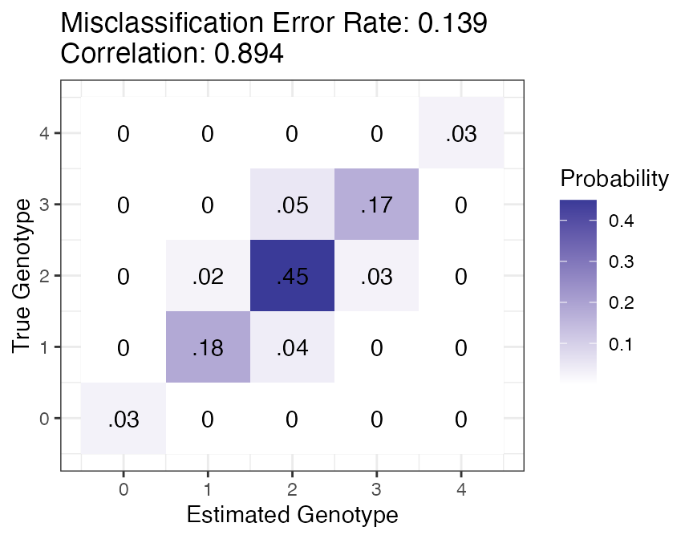

Oracle Calculations
David Gerard
2019-11-14
oracle_calculations.RmdAbstract
We provide some example usage of the oracle calculations available in updog. These are particularly useful for read-depth determination.
Controlling Misclassification Error
Suppose we have a sample of tetraploid individuals derived from an S1 cross (a single generation of selfing). Using domain expertise (either from previous studies or a pilot analysis), we’ve determined that our sequencing technology will produce relatively clean data. That is, the sequencing error rate will not be too large (say, ~0.001), the bias will be moderate (say, ~0.7 at the most extreme), and the majority of SNPs will have reasonable levels of overdispersion (say, less than 0.01). We want to know how deep we need to sequence.
Using oracle_mis, we can see how deep we need to sequence under the worst-case scenario we want to control (sequencing error rate = 0.001, bias = 0.7, overdispersion = 0.01) in order to obtain a misclassification error rate of at most, say, 0.05.
Before we do this, we also need the distribution of the offspring genotypes. We can get this distribution assuming various parental genotypes using the get_q_array function. Typically, error rates will be larger when the allele-frequency is closer to 0.5. So we’ll start in the worst-case scenario of assuming that the parent has 2 copies of the reference allele.
library(updog)
ploidy <- 4
pgeno <- 2
gene_dist <- get_q_array(ploidy = ploidy)[pgeno + 1, pgeno + 1, ]This is what the genotype distribution for the offspring looks like:
library(tidyverse)
tibble(x = 0:ploidy, y = 0, yend = gene_dist) %>%
ggplot(mapping = aes(x = x, y = y, xend = x, yend = yend)) +
geom_segment(lineend = "round", lwd = 2) +
theme_bw() +
xlab("Allele Dosage") +
ylab("Probability")
Now, we are ready to iterate through read-depth’s until we reach one with an error rate less than 0.05.
err <- Inf
depth <- 0
while(err > maxerr) {
depth <- depth + 1
err <- oracle_mis(n = depth,
ploidy = ploidy,
seq = seq,
bias = bias,
od = od,
dist = gene_dist)
}
depth
#> [1] 90Looks like we need a depth of 90 in order to get a misclassification error rate under 0.05.
Note that oracle_mis returns the best misclassification error rate possible under these conditions (ploidy = 4, bias = 0.7, seq = 0.001, od = 0.01, and pgeno = 2). In your actual analysis, you will have a worse misclassification error rate than that returned by oracle_mis. However, if you have a lot of individuals in your sample, then this will act as a reasonable approximation to the error rate. In general though, you should sequence a little deeper than suggested by oracle_mis.
Visualizing the Joint Distribution
Suppose we only have a budget to sequence to a depth of 30. Then what errors can we expect? We can use oracle_joint and oracle_plot to visualize the errors we can expect.
depth <- 30
jd <- oracle_joint(n = depth,
ploidy = ploidy,
seq = seq,
bias = bias,
od = od,
dist = gene_dist)
oracle_plot(jd)
Most of the errors will be mistakes between genotypes 2/3 and mistakes between genotypes 1/2.
Even though the misclassification error rate is pretty high (0.14), the correlation of the oracle estimator with the true genotype is pretty reasonable (0.89). You can obtain this using the oracle_cor function.
References
Gerard, David, Luís Felipe Ventorim Ferrão, Antonio Augusto Franco Garcia, and Matthew Stephens. 2018. “Genotyping Polyploids from Messy Sequencing Data.” Genetics 210 (3). Genetics: 789–807. https://doi.org/10.1534/genetics.118.301468.